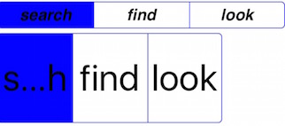

- Introduction
- 1. EMP5.3技术白皮书
- 2. EMP 安全
-
3.
EMP界面开发规范
- 3.1. 变更记录
- 3.2. CSS样式
- 3.3. 属性
-
3.4.
界面标签
- 3.4.1. 控件支持属性和样式对照表
-
3.4.2.
基础标签
- 3.4.2.1. A
- 3.4.2.2. B & Strong
- 3.4.2.3. Body
- 3.4.2.4. Br
- 3.4.2.5. Div
- 3.4.2.6. Form
- 3.4.2.7. I & Em
- 3.4.2.8. Img
- 3.4.2.9. InputButton
- 3.4.2.10. InputCheckbox
- 3.4.2.11. InputHidden
- 3.4.2.12. InputPassword
- 3.4.2.13. InputRadio
- 3.4.2.14. InputSegment
- 3.4.2.15. InputSwitch
- 3.4.2.16. InputText
- 3.4.2.17. Label
- 3.4.2.18. Richtext
- 3.4.2.19. Select & Option
- 3.4.2.20. Table & Tr & Td & Th
- 3.4.2.21. Webview
- 3.4.3. SDK定制说明
- 3.4.4. 定制标签
- 3.5. 布局与刷新
-
3.6.
Lua
-
3.6.1.
基础Lua库
- 3.6.1.1. accelerometer
- 3.6.1.2. audio
- 3.6.1.3. corp
- 3.6.1.4. database
- 3.6.1.5. document
- 3.6.1.6. file
- 3.6.1.7. gesture
- 3.6.1.8. gps
- 3.6.1.9. history
- 3.6.1.10. http
- 3.6.1.11. json
- 3.6.1.12. kv
- 3.6.1.13. location
- 3.6.1.14. offline
- 3.6.1.15. qrcode
- 3.6.1.16. screen
- 3.6.1.17. system
- 3.6.1.18. timer
- 3.6.1.19. utility
- 3.6.1.20. video
- 3.6.1.21. window
- 3.6.2. 界面标签支持的Lua接口
- 3.6.3. 动画
- 3.6.4. RYTL脚本库
-
3.6.1.
基础Lua库
- 3.7. javascript
- 4. EMP开发配置
- 5. Migrate
- 6. EWP5.3管理后台功能说明文档
- 7. EWP API
- 8. EWP Manual
- Published using GitBook
Segment
1 功能说明
<input type="segment" name="segment1" class="segment1" value="seg1">search</input>
<input type="segment" name="segment1" class="segment1" value="seg2">find</input>
<input type="segment" name="segment1" class="segment1" value="seg3">look</input>
segment控件可以通过Lua设置checked属性来动态的改变其选中状态。
连续的input标签，name相同则认为是一组，同一组标签生成一个segment控件。同一组中，至少要有两项，理论上不限上限。value值不作为显示内容，仅作为上传服务器的参数值。用titleimg属性赋值的图片或者标签之间的内容作为显示内容。checked='checked'或者checked='true'表明为默认选中项。在初始化时，不需要执行默认选中项的相应事件。如果没有checked属性，则默认选中第一项。控件元素效果各平台可以有差异。如果系统中有此控件，则以系统控件为准。
注：segment标签必须有name属性，且同一组控件需要有相同的name值。初始默认选中项只能有一个。
使用建议
segment就是一个选择控件，点击控件不同的选项，有相应的点击事件。
2 属性
全局属性以及具体说明参见属性介绍
checked
指定控件选项是否默认选中。当不写checked属性的时候，segment控件默认选中第一个。
@value string checked/true
cornerradius
指定控件圆角的弧度。
@value number 10 单位是px，但不需要写
enable
指定控件是否可用，即是否响应用户操作。同一个segment控件，设置其中一个标签的enable即可应用到整个控件。
@value string true/false
@default true
hide
指定控件的可见状态，与样式中的display:none有相同的作用。同一个segment控件，设置其中一个标签的hide即可应用到整个控件。
@value string true/false
@default false
name
同一组控件需要设置相同的name。
ontintcolor
指定控件选中状态的颜色。在iOS平台，即为主题色。
@format #RRGGBB(如#000000)
@default iOS平台为蓝色
android平台为蓝色主题的渐变色
titleimg
指定控件显示的图片。远程图片获取接口和src一致，但不需要考虑w、h参数。图片默认拉伸铺满segment控件。
@format1 local:image.png（加载本地资源，这里兼容没有local关键字的情况）
@format2 http:// | https:// | ewp_local://（加载网络资源）
注：该属性的优先级大于标签间文本显示内容，若标签同时写了titleimg属性和标签间文本，则标签间文本不显示。
type
规定标签元素的类型
@value string segment
value
指定控件的值
@value string 任意的字符串
注：当用户选中某项后，通过form表单提交时，segmeng的value值应该为选中项的value值。详情见form标签，form测试用例。
3 样式
全局样式以及具体说明参见样式介绍
注意
同一个segment控件，其中一个标签应用class样式即可作用于整个segment控件。如果同组多个标签写了class样式，则第一个生效。
background-color
指定Segment控件未选中按钮的背景色。如果按钮有边框则背景色不应该超出边框的显示区域。
color
指定segment上未选中按钮的文本颜色，即按钮上显示的文字颜色，支持色值格式#RGB(#FF00FF)。
display
指定控件的可视状态。
@value none/block
@default block
当值为none时，表示控件不可见，且不占位。
当值为block时，表示控件可见。
注：如果此属性一旦改变，需要重新布局，需要模板人员手动刷新界面(location:reload())。
当与visibility属性同时出现，visibility覆盖display属性，display不起作用。
font-size
设置字体大小。
font-style
设置字体风格。
font-weight
设置字体类型。
height
改变控件的高度。
position
指定控件的显示状态。
@value fixed/static
@default static
visibility
规定元素是否可见。即使不可见的元素也会占据页面上的空间。
@value visible/hidden
@default visible
注：当与display属性同时出现，visibility覆盖display属性，display不起作用。
width
改变控件的宽度。设置的宽度为segment的总宽度，各标签平分宽度。
4 伪类
支持：active样式。
当segment设置了伪类样式active后，被选中的选项需要应用伪类样式。
伪类样式支持如下：
background-color
指定被选择选项的背景色。
注：同时写了onTintColor属性时，onTintColor负责边线和分割线的颜色，active中的background-color负责选中部分的背景色。
color
指定被选择选项中文本颜色，支持色值格式#RGB(#FF00FF)。
5 事件
onclick
控件的点击事件。
6 Examples
图片截取的iOS平台（iOS7以上），并非统一样式，各平台显示样式以各平台真实显示效果为准。
6.1 position
代码片段1：css
<style>
.positionFixed{position:fixed;}
</style>
代码片段2：页面
<body>
<!-- positon:fixed -->
<input type="segment" name="segment1" class='positionFixed' value="segg1" >search</input>
<input type="segment" name="segment1" value="segg2" >find</input>
<input type="segment" name="segment1" value="segg3" >look</input>
<body>
效果图：
6.2 size
代码片段1：css
<style>
.segment2{left:10px;width:150px;height:80px;}
.label1{left:10px;width:300px;height:30px;font-weight:bold;}
.label2{left:10px;width:300px;height:30px;font-size:15px;}
</style>
代码片段2：页面
<body>
<!-- size -->
<label class='label1'>size 测试</label>
<label class='label2'>默认size</label>
<input type="segment" name="segment1" value="seg1" >search</input>
<input type="segment" name="segment1" value="seg2" >find</input>
<input type="segment" name="segment1" value="seg3" >look</input>
<label class='label2'>修改size</label>
<input type="segment" name="segment2" class="segment2" value="seg1" >search</input>
<input type="segment" name="segment2" value="seg2" >find</input>
<input type="segment" name="segment2" value="seg3" >look</input>
<label class='label2'>说明：后面都采用默认size.</label>
<body>
效果图：

6.3 hide/display/visibility
代码片段1：css
<style>
.display1{display:none;}
.display2{display:block;}
.visibility1{visibility:visible;}
.visibility2{visibility:hidden;}
.label1{left:10px;width:300px;height:30px;font-weight:bold;}
.label2{left:10px;width:300px;height:30px;font-size:15px;}
</style>
代码片段2：页面
<body>
<!-- hide -->
<label class='label1'> hide 测试</label>
<label class='label2'>hide = 'true',不显示</label>
<input type="segment" hide='true' name="segment3" value="seg1" >search</input>
<input type="segment" name="segment3" value="seg2" >find</input>
<input type="segment" name="segment3" value="seg3" >look</input>
<label class='label2'>hide = 'false',显示</label>
<input type="segment" hide='false' name="segment4" value="seg1" >search</input>
<input type="segment" name="segment4" value="seg2" >find</input>
<input type="segment" name="segment4" value="seg3" >look</input>
<!-- diaplay -->
<label class='label1'> display 测试</label>
<label class='label2'>diplay='none',不显示,不占位</label>
<input type="segment" name="segment5" class="display1" value="seg1" >search</input>
<input type="segment" name="segment5" value="seg2" >find</input>
<input type="segment" name="segment5" value="seg3" >look</input>
<label class='label2'>diplay='block',显示</label>
<input type="segment" name="segment6" class="display2" value="seg1" >search</input>
<input type="segment" name="segment6" value="seg2" >find</input>
<input type="segment" name="segment6" value="seg3" >look</input>
<!-- visibility -->
<label class='label1'> visibility 测试</label>
<label class='label2'>visibility='hidden',不显示,占位</label>
<input type="segment" name="segment7" class="visibility2" value="seg1" >search</input>
<input type="segment" name="segment7" value="seg2" >find</input>
<input type="segment" name="segment7" value="seg3" >look</input>
<label class='label2'>visibility='visible',显示</label>
<input type="segment" name="segment8" class="visibility1" value="seg1" >search</input>
<input type="segment" name="segment8" value="find" >seg2</input>
<input type="segment" name="segment8" value="look" >seg3</input>
<body>
效果图：
6.4 font-size/font-weight/font-style
代码片段1：css
<style>
.fontSize{font-size:13px;}
.fontWeight{font-weight:bold;}
.fontStyle{font-style:italic};
</style>
代码片段2：页面
<body>
<!-- font-weight font-size font-style-->
<label class='label1'> font-weight font-size font-style测试</label>
<label class='label2'> size=13px,正常</label>
<input type="segment" name="segment13" class="fontSize" value="seg1" >search</input>
<input type="segment" name="segment13" value="seg2" >find</input>
<input type="segment" name="segment13" value="seg3" >look</input>
<label class='label2'> size=13px,粗体</label>
<input type="segment" name="segment14" class="fontSize,fontWeight" value="search" >search</input>
<input type="segment" name="segment14" value="find" >find</input>
<input type="segment" name="segment14" value="look" >look</input>
<label class='label2'> size=13px,斜体</label>
<input type="segment" name="segment15" class="fontSize,fontStyle" value="seg1" >search</input>
<input type="segment" name="segment15" value="seg2" >find</input>
<input type="segment" name="segment15" value="seg3" >look</input>
<body>
效果图：
6.5 checked
代码片段1：lua
function changechecked()
local test_ctrl = document:getElementsByName("segment9");
if test_ctrl and #test_ctrl > 0 then
local checked1 = test_ctrl[1]:getPropertyByName("checked");
local checked2 = test_ctrl[2]:getPropertyByName("checked");
local checked3 = test_ctrl[3]:getPropertyByName("checked");
if checked1 == "true" then
test_ctrl[1]:setPropertyByName('checked','false');
test_ctrl[2]:setPropertyByName('checked','false');
test_ctrl[3]:setPropertyByName('checked','true');
window:alert("第三个被选中");
elseif checked2 == "true" then
test_ctrl[1]:setPropertyByName('checked','true');
test_ctrl[2]:setPropertyByName('checked','false');
test_ctrl[3]:setPropertyByName('checked','false');
window:alert("第一个被选中");
elseif checked3 == "true" then
test_ctrl[1]:setPropertyByName('checked','false');
test_ctrl[2]:setPropertyByName('checked','true');
test_ctrl[3]:setPropertyByName('checked','false');
window:alert("第二个被选中");
end;
end;
end;
代码片段2：页面
<body>
<!-- checked -->
<label class='label1'> checked 测试</label>
<input type='button' value='点击通过改变checked改变下面segment选中状态' name='btn2' class='button' onclick='changechecked()'>yes</input>
<label class='label2'>segment第三个为选中</label>
<input type="segment" name="segment9" value="seg1" >search</input>
<input type="segment" name="segment9" value="seg2" >find</input>
<input type="segment" name="segment9" checked="checked" value="seg3" >look</input>
<body>
效果图：
6.6 onclick
代码片段1：lua
实例1:
function onclick()
local test_ctrl = document:getElementsByName("test");
if test_ctrl and #test_ctrl > 0 then
local checked1 = test_ctrl[1]:getPropertyByName("checked");
local checked2 = test_ctrl[2]:getPropertyByName("checked");
local checked3 = test_ctrl[3]:getPropertyByName("checked");
if checked1 == "true" then
window:alert(第一个被选中);
elseif checked2 == "true" then
window:alert(第二个被选中);
elseif checked3 == "true" then
window:alert(第三个被选中);
end;
end;
end;
首先取到segment控件，以三个选项的segment控件为例，依次判断三个选项哪个是选中状态（选中checked为true,非选中为false。注意，true和false为字符串形式），从而进行相应的操作。
实例2:
function onclick1()
window:alert("第一个被选中");
end;
function onclick2()
window:alert("第二个被选中");
end;
function onclick3()
window:alert("第三个被选中");
end;
代码片段2：页面
<body>
<!-- onclick事件 -->
<label class='label1'> onclick 测试</label>
<label class='label2'> 文档实例1:onclick实现</label>
<input type="segment" name="segment10" value="seg1" onclick="onclick()" >search</input>
<input type="segment" name="segment10" value="seg2" onclick="onclick()">find</input>
<input type="segment" name="segment10" value="seg3" onclick="onclick()" >look</input>
<label class='label2'> 文档实例2:onclick实现</label>
<input type="segment" name="segment11" value="seg1" onclick="onclick1()" >search</input>
<input type="segment" name="segment11" value="seg2" onclick="onclick2()">find</input>
<input type="segment" name="segment11" value="seg3" onclick="onclick3()" >look</input>
<body>
效果图：
6.7 enable
代码片段1：lua
function onclickfalse()
window:alert("enable=false,能点击，错误");
end;
代码片段2：页面
<body>
<!-- enable -->
<label class='label1'> enbale 测试</label>
<label class='label2'> enbale='false' 不能点击</label>
<input type="segment" enable='false' name="segment12" value="search" onclick="onclickfalse()" >search</input>
<input type="segment" name="segment12" value="find" onclick="onclickfalse()">find</input>
<input type="segment" name="segment12" value="look" onclick="onclickfalse()" >look</input>
<body>
效果图：
6.8 titleimg
注：该属性的优先级大于标签间文本显示内容，若标签同时写了titleimg属性和标签间文本，则标签间文本不显示。
代码片段1：页面
<body>
<!-- titleimg -->
<label class='label1'> titleimg 测试</label>
<input type="segment" name="segment16" value="search" titleimg="local:bj.png"></input>
<input type="segment" name="segment16" value="find" >find</input>
<input type="segment" name="segment16" value="look" titleimg="local:gh.png">look</input>
<body>
效果图：

6.9 ontintcolor
代码片段1：页面
<body>
<!-- ontintcolor -->
<label class='label1'> ontintcolor 测试</label>
<input type="segment" name="segment17" value="search" selected="selected" ontintcolor="#FFFF00">search</input>
<input type="segment" name="segment17" value="find" >find</input>
<input type="segment" name="segment17" value="look">look</input>
<body>
效果图：

6.10 cornerradius
代码片段1：页面
<body>
<!-- cornerradius -->
<label class='label1'> cornerradius 测试</label>
<input type="segment" name="segment18" value="search" cornerradius="25">search</input>
<input type="segment" name="segment18" value="find" >find</input>
<input type="segment" name="segment18" value="look">look</input>
<body>
效果图：

| date | note | modifier |
|---|---|---|
| 2014-10-24 | 初稿 | lv.teyan |
| 2014-12-03 | 增加用例图片 | lv.teyan |
| 2015-04-09 | 增加属性titleimg、tintcolor、cornerradius | zhou.changjin |
| 2015-08-17 | 增加新样式的示例代码及效果图 | chai.lixin |
| 2015-09-17 | 增加checked属性支持“true”值，以及titleimg属性铺满segment标签的说明，并调整文档结构 | zhou.changjin |
| 2015-09-25 | 新增样式background-color、color，以及伪类说明 | lin.jitao |
| 2015-10-15 | 完善background-color、color及伪类效果说明 | zhou.changjin |